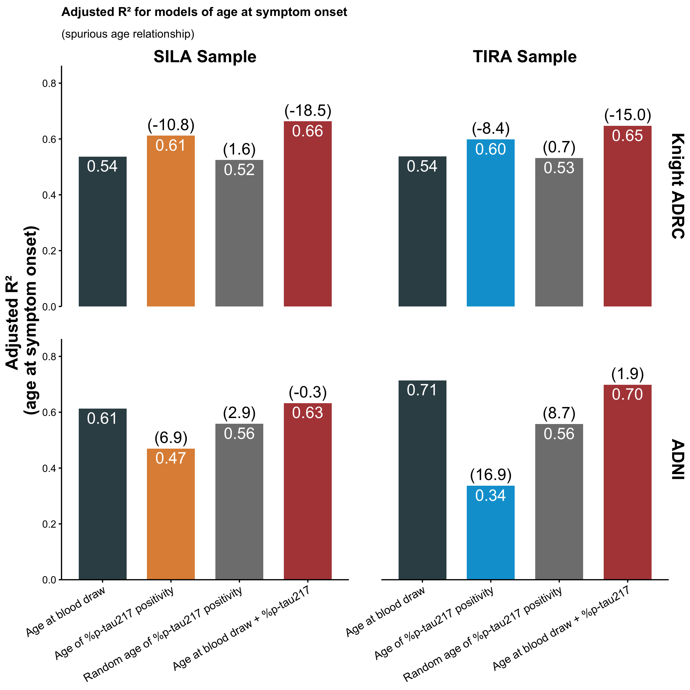
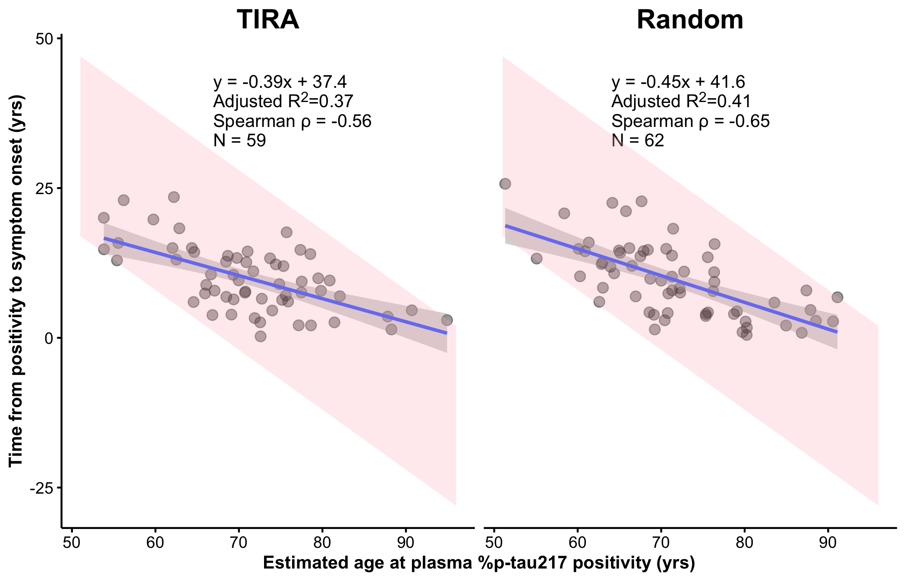
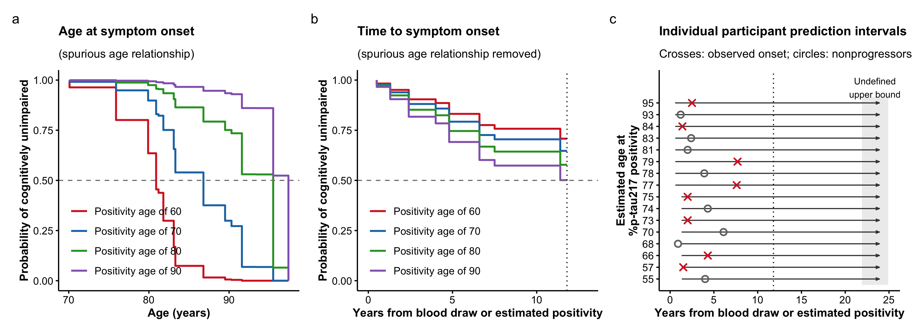
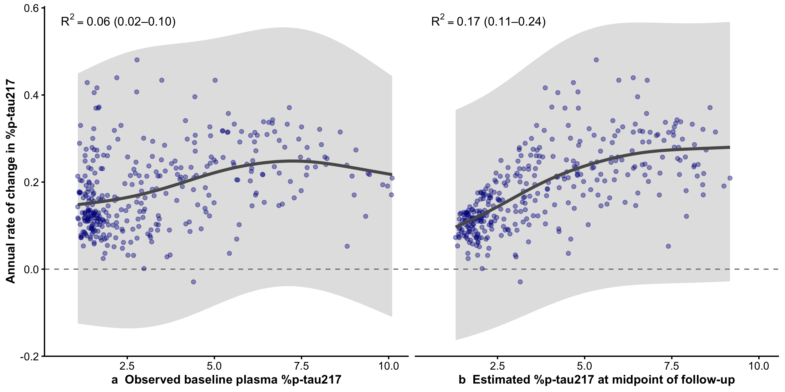
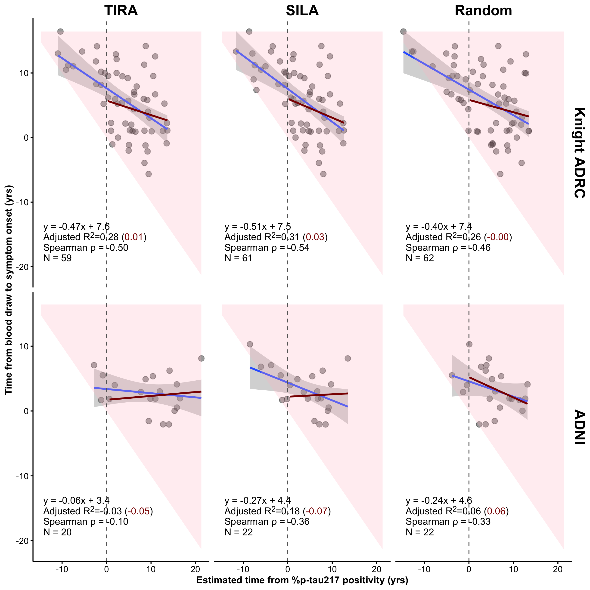
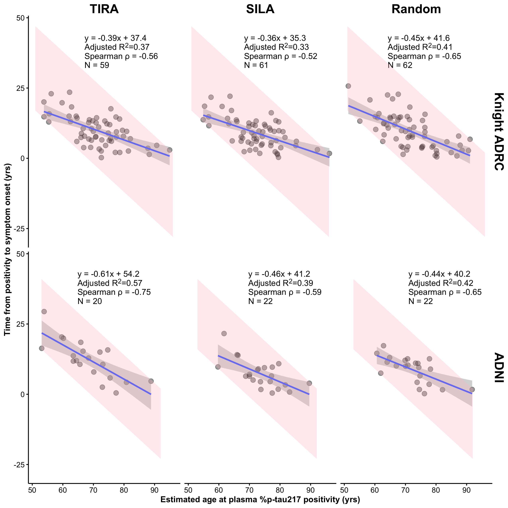

Predicting the age of Alzheimer’s symptom onset from a blood test: evaluating a prognostic claim
Plasma p-tau217 ‘clock’ predictions of symptom onset owe their accuracy to age shared between predictor and outcome, not to the biomarker. Companion code for Insel & Donohue (medRxiv 2026).
Philip S. Insel1* and Michael C. Donohue2
1Department of Psychiatry and Behavioral Sciences, University of California, San Francisco, CA, USA
2Epstein Family Alzheimer’s Therapeutic Research Institute, Keck School of Medicine, University of Southern California, San Diego, CA, USA
*Corresponding author: philip.insel@ucsf.edu
NoteAbout this post
This post accompanies our preprint, Predicting the age of Alzheimer’s symptom onset from a blood test: evaluating a prognostic claim (medRxiv, version 2 posted October 7, 2026; doi:10.64898/2026.03.26.26349230).1 The text follows the preprint, and the R code that produces Figures 1–6 and Supplementary Figures S1–S4 is included below each figure (click Show code). The full source for this post is on GitHub: https://github.com/mcdonohue/blog/tree/main/posts/design-artifacts.
Abstract
Objectives: Plasma p-tau217 clocks have been reported to predict when Alzheimer’s symptoms will begin, from a single blood test. This would transform Alzheimer’s research and care. We evaluated the prognostic value of these models.
Design: Analysis of a published prognostic study using data from two prospective longitudinal cohorts.
Setting: Two observational research cohorts: the Knight Alzheimer Disease Research Center (Knight ADRC), a single US centre, and the Alzheimer’s Disease Neuroimaging Initiative (ADNI), a multicentre study in the US and Canada.
Participants: 345 ADNI participants with longitudinal plasma %p-tau217 used to develop the clocks; 200 ADNI participants who were cognitively unimpaired (Clinical Dementia Rating 0) at blood draw; and 83 participants from both cohorts who progressed to symptomatic Alzheimer’s disease in the original report.
Main Outcome Measures: Age at symptom onset; time from %p-tau217 positivity to onset; time to onset from blood draw.
Results: The clock predictor, estimated age at %p-tau217 positivity, is age at blood draw minus estimated time since positivity, so age is shared by the predictor and the outcome, age at symptom onset. Separated from age, the clock’s %p-tau217 component explained essentially no variance (adjusted R² −0.02 to 0.02). Age alone explained 0.54 to 0.71, compared with 0.34 to 0.61 reported for the clock. Raw %p-tau217 with age outperformed the clock in every analysis. For time from positivity to onset, the reported shorter interval at older positivity ages was reproduced when the %p-tau217 component was replaced with a random number. In survival analysis, estimated age at positivity was associated with symptom onset age (hazard ratio 0.87, 95% confidence interval 0.81 to 0.95), but not when onset was measured from blood draw, removing the shared age component (1.02, 0.96 to 1.09).
Conclusions: The clock claims are unsupported. The reported accuracy comes from age shared between predictor and outcome, not from %p-tau217. Because timing is estimated only in known progressors, the model does not attempt to identify if an individual will progress, so it cannot answer the key question of when they will progress. Predictions from these models are unsupported for clinical or consumer use.
Introduction
The Alzheimer disease field has advanced markedly in recent years, in large part due to blood-based biomarkers. Plasma p-tau217, in particular, identifies underlying amyloid and tau pathology with high accuracy,2,3 at a fraction of the cost of PET or cerebrospinal fluid testing, and is now moving into clinical use. Pathology that once required a PET scan or a lumbar puncture to detect can now be identified from a blood sample.
With detection increasingly feasible, the question is now how prognostic a blood test can be: whether it can forecast an individual’s disease trajectory, and above all when symptoms will appear. Disease clock models4,5 have become a leading approach. From a single p-tau217 level, the model reads off how far along an assumed common trajectory a person has progressed, and converts that position to a time scale, estimating the age at which they became positive and the time remaining before symptoms. Their predictive power and simplicity come from one assumption: that every individual, once accumulation begins, progresses along the same trajectory at a consistent rate, so that a single measurement can be read as a point in time. First applied to amyloid PET, the approach has since been extended to plasma biomarkers, and such models now make up a rapidly growing literature.4–9
Applying disease clock models (SILA4 and TIRA5) to plasma %p-tau217, Petersen and colleagues10 estimate each individual’s age at %p-tau217 positivity, defined as age at blood draw minus the estimated time from positivity, and regress observed age at symptom onset on this estimate in individuals who progressed to symptomatic AD. On the basis of adjusted R² values of up to 0.6, they conclude that age at symptom onset can be estimated from a single blood test with a median error of less than four years. The report has drawn substantial international press coverage,11,12 the models are implemented in a publicly accessible web application that returns individual predictions of symptom onset,13 and, with plasma p-tau217 available direct to consumer, these predictions have a route to individual patients with no clinical oversight.
Predictive accuracy of this magnitude would genuinely transform Alzheimer research. The age at symptom onset could be estimated from a single blood measurement years in advance, onset anticipated for an individual patient, interventions timed accordingly, and trials enriched by predicted onset with substantial gains in efficiency.
Precisely because these implications are so large, the size of the reported effect warrants close scrutiny. An R² of 0.6 for a clinical outcome, from a single blood measurement, is large. Effects of this size have warranted a closer look before. In social neuroscience, implausibly strong brain–behavior correlations were traced to analyses that used the same data to select regions of interest and to estimate the correlation within them, a problem identified only after the approach had become standard practice.14
Associations of this kind often arise from design features that recur across fields, each of which inflates apparent associations. A shared component arises when the same variable contributes to both predictor and outcome, so that a portion of the explained variance is guaranteed independently of any real association. A bound arises when the outcome cannot take any value but is limited to a region fixed by the predictor, so that the constraint itself manufactures an association. Disease clocks may be prone to both, and we examine whether the reported associations arise from these features rather than from information in the biomarker.
In the analyses that follow, we examine each mechanism in turn. We test whether the reported accuracy persists when the biomarker is replaced by noise, whether it holds when the shared component is removed, and whether a simpler model using the raw plasma measurement directly performs comparably. Finally, we assess whether the data support the assumption of consistent accumulation on which the framework rests.
Methods
Participants
Participants in the progressor analyses were cognitively unimpaired at their initial clinical visit (CDR 0) and had at least one plasma %p-tau217 measure. The progressor analyses used data shared by the original authors: Knight ADRC and ADNI participants who progressed to symptomatic AD (CDR > 0). The survival analyses used contemporary ADNI data (downloaded 10 July 2026), including nonprogressors, and the common-trajectory analysis used the ADNI clock-development sample (n=345). As in the original report, clock estimation required at least two plasma %p-tau217 values within the range used to develop the clocks, separated by at least one year, and clock assignment required at least one in-range value.10
Plasma %p-tau217
As in the original report, plasma %p-tau217, the ratio of phosphorylated to non-phosphorylated tau at position 217, was measured by liquid chromatography–mass spectrometry (C2N Diagnostics). The positivity threshold was 4.06, corresponding to an amyloid PET level of 20 centiloids, and the clocks were developed over the range 1.06 to 10.45.10
Clock estimation
TIRA estimates the time required to pass from one biomarker level to another by integrating the reciprocal of the modeled rate of accumulation.5 For plasma %p-tau217, individual rates were estimated with a linear mixed-effects model and related to the level at the midpoint of follow-up with a generalized additive model.10 SILA samples biomarker versus age data to establish the relationship between rate and level, and integrates it numerically by Euler’s method into a curve of biomarker level against time.4
For the progressor analyses, TIRA and SILA estimates were supplied by the authors of the original report; participants with more than one plasma sample were assigned the average of their estimates.
Clinical measures
Cognitive status was assessed with the Clinical Dementia Rating (CDR). Symptomatic AD was defined as a CDR global score greater than 0 with a diagnosis of an AD syndrome.10 For the survival analyses, participants were required to be cognitively unimpaired (CDR 0) at the qualifying blood draw. Onset was dated to the start of the interval in which impairment occurred, and it had to persist at the last assessment and occur after the estimated age at positivity. Participants who progressed before their estimated age at positivity, or to a non-AD syndrome, were censored at their last unimpaired assessment. Clinical syndrome was assessed using the CDR by experienced clinicians blinded to biomarker results.10
Statistical analysis
In each analysis, the aim was to separate the association attributable to biomarker signal from the association produced by two design features: a shared component, in which the same quantity enters both the predictor and the outcome, and a bound, in which the outcome is confined to a region fixed by the predictor.
We decomposed the clock into age at blood draw, defined as age at the first plasma collection, and estimated time from %p-tau217 positivity (time from positivity). In the first set of analyses, age at symptom onset was regressed by ordinary least squares on age at blood draw, on time from positivity, and on the clock-estimated age at positivity, each separately, and the clock was compared with a model using age at blood draw and raw %p-tau217 directly, by adjusted R² and the Akaike information criterion (AIC).15 As a null comparison, time from positivity was replaced with a random value drawn uniformly over the same range, 10,000 times, to generate the distribution of adjusted R² expected from the design constraints alone. In a sensitivity analysis, these comparisons were repeated after excluding participants whose symptom onset preceded the blood draw: the clock is proposed to predict when symptoms will begin in people who are cognitively unimpaired, and for a participant whose blood was drawn after onset, the onset it is used to predict has already occurred.
In the second set, age was removed from the outcome by regressing time from blood draw to symptom onset on time from positivity, estimated by TIRA, by SILA, and as a random value. Because onset was required to follow estimated positivity, a participant not yet positive at the draw could be included only if onset occurred after the time at which the clock places positivity, so time from positivity sets a floor on time to onset. For participants already positive at the draw, the floor falls before the draw and places little constraint on the observed time to onset, so we repeated the analysis restricted to this group. If the association reflects biomarker information, it should persist in this group; if it reflects the bound, it should largely disappear.
In the third set, time from positivity to symptom onset (observed age at onset minus estimated age at positivity) was regressed on estimated age at positivity, estimated in the same three ways. Because the outcome is age at onset minus the predictor, the covariance between them equals the covariance between age at onset and the predictor minus the variance of the predictor, and is negative even when the biomarker carries no information.16
In the fourth set, nonprogressors were included and interval-censored proportional hazards models (icenReg,17 as in the original report) were fit on two timescales: age, as in the original report, and time from the blood draw or from estimated positivity for participants not yet positive at the draw, which excludes immortal time before an event could be counted.18,19 Confidence intervals were obtained by bootstrap resampling (5,000 samples), and individual prediction intervals from the fitted survival curves. Survival curves are shown until fewer than five participants remained under observation.
In the fifth set, we tested the assumption that individuals at the same %p-tau217 level progress at the same rate. In the ADNI clock-development sample (n=345), participant-specific rates of change were estimated from a linear mixed model with random intercepts and slopes and regressed on %p-tau217 level, using either the observed value at the first plasma collection or the model-based value at the midpoint of follow-up, with uncertainty propagated by resampling (2,000 draws from each participant’s conditional distribution of intercept and slope).
Show code: data preparation
# The original authors supplied four files, one per cohort (Knight ADRC, ADNI) and clock method (TIRA, SILA). Each row is a progressor with the following columns:# # | Column | Description |# |:--|:--|# | `ID` | Anonymized participant identifier (unique within file only) |# | `baseline_plasma` | %p-tau217 at the first plasma collection |# | `baseline_plasma_age` | Age at the first plasma collection (age at blood draw) |# | `ptau217_positivity_age` | Clock-estimated age at %p-tau217 positivity |# | `age_of_symptom_onset` | Observed age at symptom onset |# | `duration` | Supplied interval from positivity to onset (not used; recomputed below) |# # From these we derive the clock's blood-test component, estimated time from positivity, by inverting the clock's definition (age at positivity = age at blood draw − time from positivity), and the other intervals used below. We also add a **random comparator**: for every participant, time from positivity is replaced with a draw from a uniform distribution that respects the same design constraints as the real estimates, namely that positivity precedes onset (lower limit) and the largest SILA estimate observed (upper limit). The random comparator therefore has the same shared age component and the same bound as the clock, but contains no biomarker information.data_dir <-"Petersen progressor subsets"if (!dir.exists(data_dir)) {stop("The progressor data are not public and are not included in this ","repository. Request them from the authors of Petersen et al. (2026) and ","save the four CSV files in '", data_dir, "/'.")}read_progressors <-function(file, source, method) {read.csv(file.path(data_dir, file)) %>%mutate(Source = source, Method = method)}dat <-bind_rows(read_progressors("progressors_ADNI_TIRA_anon.csv", "ADNI", "TIRA"),read_progressors("progressors_ADNI_SILA_anon.csv", "ADNI", "SILA"),read_progressors("progressors_KADRC_TIRA_anon.csv", "Knight ADRC", "TIRA"),read_progressors("progressors_KADRC_SILA_anon.csv", "Knight ADRC", "SILA")) %>%mutate(# ptau217_positivity_age = baseline_plasma_age - time_from_positivity,# so the blood-test component of the clock is:time_from_positivity = baseline_plasma_age - ptau217_positivity_age,# years from symptom onset to the blood draw (negative = onset after draw)time_from_onset = baseline_plasma_age - age_of_symptom_onset,# The supplied ID is file-specific, so link the same person across the# TIRA and SILA files by cohort, age at blood draw and %p-tau217.id =paste(Source, baseline_plasma_age, baseline_plasma) %>%as.factor() %>%as.numeric())if (with(dat, any(duplicated(paste(Method, id))))) {stop("Participant keys are not unique within method.")}# ---- Random comparator ----# Upper limit for random time from positivity: the largest SILA estimate.max_pos <- dat %>%filter(Method =="SILA") %>%pull(time_from_positivity) %>%max()# The random comparator is built for every participant in either method# sample. All TIRA participants also appear in the SILA sample except one in# Knight ADRC (id 53), who is added explicitly. The lower limit,# time_from_onset, enforces the inclusion rule that estimated positivity must# precede onset (time from positivity >= draw age - onset age).set.seed(20260317)random_time_from_positivity <- dat %>%filter(Method =="SILA"| id ==53) %>%arrange(Source, Method) %>%mutate(Method ="Random",time_from_positivity =runif(n(), min = time_from_onset, max = max_pos),ptau217_positivity_age = baseline_plasma_age - time_from_positivity)dat <- dat %>%bind_rows(random_time_from_positivity) %>%mutate(Source =factor(Source, c('Knight ADRC', 'ADNI')),Method =factor(Method, c('TIRA', 'SILA', 'Random')),# outcome of Figure 4: time from estimated positivity to onsettime_from_positivity_to_onset = age_of_symptom_onset - ptau217_positivity_age,# outcome of Figure 2: time from blood draw to onset (age at onset with# the shared age-at-blood-draw component removed)time_baseline_to_onset = age_of_symptom_onset - baseline_plasma_age)# Long format for Figure 1 / S1 / S2: one row per participant x method x# predictor, all sharing the outcome y = age at symptom onset.dat_long <- dat %>%pivot_longer(cols =c(baseline_plasma_age, time_from_positivity, ptau217_positivity_age),names_to ="panel",values_to ="x") %>%mutate(y = age_of_symptom_onset,panel =factor( panel,levels =c("baseline_plasma_age", "time_from_positivity","ptau217_positivity_age"),labels = PANEL_LEVELS))
Show code: sample sizes
# Participants per sample, and how many had symptom onset before the blood drawdat %>%group_by(Source, Method) %>%summarise(N =n(),`Onset before blood draw`=sum(time_baseline_to_onset <0),`Onset window from draw (yrs)`=sprintf("%.1f to %.1f",min(time_baseline_to_onset), max(time_baseline_to_onset)),`Age at onset range (yrs)`=sprintf("%.1f to %.1f",min(age_of_symptom_onset), max(age_of_symptom_onset)),.groups ="drop") %>%kable()
Results
Participants
Data provided by the authors comprised participants from the original report who were cognitively unimpaired at their first clinical assessment, developed cognitive impairment with an AD syndrome after estimated %p-tau217 positivity, and remained impaired with an AD syndrome at their last assessment: 59 (TIRA) and 61 (SILA) individuals from the Knight ADRC and 20 (TIRA) and 22 (SILA) from ADNI, described in Supplementary Table 2 of Petersen et al.10 Clinical follow-up began before the first plasma collection, and 11% to 15% of these participants had symptom onset before their blood draw (Knight ADRC: 7 of 61 for SILA and 8 of 59 for TIRA; ADNI: 3 of 22 for SILA and 3 of 20 for TIRA). Median clinical follow-up was 13.0 to 13.2 years in the Knight ADRC progressors (11 assessments) and 10.1 years in the ADNI progressors (10.5 assessments).
The ADNI survival sample comprised 200 participants who were cognitively unimpaired at the qualifying blood draw and had a SILA-estimated age at %p-tau217 positivity. Median age at blood draw was 74.1 years, 54.0% were female, median education was 16 years, 27.5% carried at least one APOE ε4 allele, and median follow-up from blood draw was 8.22 years. Thirty progressed to symptomatic AD after their estimated age at %p-tau217 positivity. Seven progressed before their estimated age at positivity and 30 to a non-AD diagnosis; both groups were censored at their last unimpaired assessment. The remaining 133 were unimpaired at their last assessment and were censored at that time. For the analysis with follow-up starting at the blood draw or estimated positivity, 64 participants whose follow-up ended before their estimated age at positivity were excluded, including the 7 who progressed before positivity, leaving 136 participants and 30 events. In 76 of these, follow-up began at the estimated age at positivity.
The analyses that follow model three outcomes: age at symptom onset, time from blood draw to onset, and time from %p-tau217 positivity to onset. Each analysis in the original report contains a shared component: the same quantity enters both the predictor and the outcome, so the two are correlated by construction. All three analyses are also restricted to individuals whose age at symptom onset was greater than their estimated age at positivity. This inclusion rule bounds the outcome, so it cannot take just any value and is confined to a region fixed by the predictor. The rule is the same for every outcome; only the quantity that sets the bound changes. Either feature alone is sufficient to manufacture an association, whether or not the biomarker carries any information. The shared component and the bound for each outcome are described in the sections that follow.
Age at symptom onset: a shared component and a bound
In the original report, age at symptom onset was regressed on the clock’s estimated age at %p-tau217 positivity, defined as age at blood draw minus estimated time from positivity. Age at blood draw is therefore the shared quantity: it enters the predictor directly, and it is contained in the outcome, since age at onset equals age at blood draw plus time from blood draw to onset.
Age at blood draw also bounds the outcome. Onset could be observed only within a limited window of clinical follow-up, which began before the blood draw, so age at onset is confined to a fixed band around age at blood draw, from 5.7 years before to 16.4 years after blood draw in Knight ADRC (Figure 1).
The original report attributed adjusted R² values of 0.337 to 0.612 to the clock-estimated age at %p-tau217 positivity as a predictor of age at symptom onset.10 When the clock was decomposed into age at blood draw and estimated time from %p-tau217 positivity, the biomarker timing term alone explained essentially no variance in age at symptom onset in either cohort: adjusted R² = 0.02 (TIRA) and 0.01 (SILA) in the Knight ADRC cohort (Figure 1) and adjusted R² = −0.02 (TIRA) and 0.00 (SILA) in ADNI (Supplementary Figure S1). TIRA and SILA estimates in Knight ADRC are shown in Supplementary Figure S2. Age at blood draw alone explained far more: adjusted R² = 0.54 for both method samples in Knight ADRC, and adjusted R² = 0.71 (TIRA sample) and 0.61 (SILA sample) in ADNI.
Show code: statistics for Figure 1 and Supplementary Figures S1-S2
# Full TIRA + SILA + Random versions (Supplementary Figures S1 and S2)panel_stats_adni <-compute_panel_stats(dat_long, "ADNI")panel_stats_kadrc <-compute_panel_stats(dat_long, "Knight ADRC")seg_data_adni <-make_seg_data(dat, "ADNI")seg_data_kadrc <-make_seg_data(dat, "Knight ADRC")constraint_adni <-make_constraint(dat_long, "ADNI")constraint_kadrc <-make_constraint(dat_long, "Knight ADRC")# Main-text version (Figure 1): Knight ADRC, TIRA and the random comparator# only. Re-leveling Method (rather than just filtering rows) drops the unused# "SILA" level so facet_grid() does not draw an empty row.drop_sila <-function(df) { df %>%filter(Method !="SILA") %>%mutate(Method =factor(Method, levels =c("TIRA", "Random")))}dat_tira <-drop_sila(dat)dat_long_tira <-drop_sila(dat_long)panel_stats_kadrc_tira <-compute_panel_stats(dat_long_tira, "Knight ADRC")seg_data_kadrc_tira <-make_seg_data(dat_tira, "Knight ADRC")constraint_kadrc_tira <-make_constraint(dat_long_tira, "Knight ADRC")
Figure 1: Relationships in Knight ADRC between the predicted outcome (age at symptom onset) and three predictors: age at blood draw (first plasma collection), estimated time from %p-tau217 positivity, and their difference, age at blood draw minus estimated time from %p-tau217 positivity (ie, estimated age at %p-tau217 positivity). Time from %p-tau217 positivity is estimated by the TIRA method (top row) or by randomly sampling from a uniform distribution over the observed range of estimates (bottom row); results for the SILA method are shown in Supplementary Figure S2. Panels include fitted linear regression estimates, summary statistics for each predictor, and a dashed identity line. To illustrate the contribution of time from %p-tau217 positivity (middle column), the rightmost panels show faint grey lines connecting each person’s age at blood draw to their estimated age at %p-tau217 positivity. The pink regions span the observed window of onset, from 5.7 years before to 16.4 years after the blood draw. Because onset was observed only within this window, the data are constrained to a fixed band around the identity line, and age at blood draw determines age at onset up to that interval.
Incorporating the biomarker timing term through the clock produced some improvement over age alone in Knight ADRC (adjusted R² = 0.60–0.61 vs 0.54; ΔR² = 0.06–0.07). However, this improvement was largely driven by participants whose blood was drawn after symptom onset (7 of 61 for SILA; 8 of 59 for TIRA). These draws came from people who were already cognitively impaired, whereas the analysis is premised on predicting time to symptoms in people who are cognitively unimpaired (CDR 0); for these participants, the clock recovers an onset that has already occurred rather than predicting one. When they were excluded, the clock’s advantage over age fell to less than 0.02 for both methods (SILA: adjusted R² = 0.55 for the clock vs 0.54 for age; TIRA: 0.56 for the clock vs 0.55 for age). In ADNI the clock performed worse than age alone (TIRA: adjusted R² = 0.34 for the clock vs 0.71 for age; SILA: 0.47 for the clock vs 0.61 for age) and worse than a random comparator (adjusted R² = 0.56, Supplementary Figure S1), and excluding participants with onset before the draw (3 in each sample) widened the gap (TIRA: 0.33 for the clock vs 0.83 for age; SILA: 0.47 for the clock vs 0.74 for age).
Show code: excluding participants with onset before the blood draw
# Repeat the Figure 3 model comparison without participants whose symptom# onset preceded the blood draw (time_baseline_to_onset < 0). These# participants were already impaired when blood was drawn, so the clock# "predicts" an onset that had already occurred. Produces the adjusted R2# values quoted in the text for this sensitivity analysis.sensitivity <-bind_rows(`All progressors`=fit_model_comparison(dat),`Onset after blood draw`=fit_model_comparison( dat %>%filter(time_baseline_to_onset >=0)),.id ="Sample") %>%select(Sample, Source, Method, N, Model, Adj_R2) %>%pivot_wider(names_from = Model, values_from = Adj_R2)
Under the design-constrained null, in which biomarker timing information was replaced by random values, the nominal Type I error rate of the clock was severely inflated. In Knight ADRC, 100% of simulated analyses produced statistically significant associations (p<0.05), despite the absence of biomarker information; in ADNI, 98.5% were significant. The median null adjusted R² ranged from 0.43 to 0.49, accounting for most of the observed predictive performance: 77 to 82% of the observed adjusted R² in the Knight ADRC analyses and 91 to 141% (greater than 100% indicates worse performance than the median null value) of the observed adjusted R² in ADNI. Thus, the magnitude of the reported associations is largely what would be expected from the study design alone, even when biomarker information is removed, and in the case of ADNI, worse than expected.
Show code: design-constrained null simulation
# Produces the null results quoted above: Type I error (share of null fits# with p < 0.05), the median null adjusted R2, and the median null as a# percentage of the observed adjusted R2 (`null_summary`).# For one cohort x method sample, repeatedly replace time from positivity# with a random draw that respects the design constraints (positivity# precedes onset; upper limit max_pos), rebuild age at positivity, and refit# the original report's regression of age at onset on age at positivity.make_null_r2 <-function(df, n_iter =1000) {map_dfr(seq_len(n_iter), function(iter) { df_null <- df %>%mutate(rand_time =runif(n(), min = time_from_onset, max = max_pos),rand_ptau_age = baseline_plasma_age - rand_time) fit <-summary(lm(age_of_symptom_onset ~ rand_ptau_age, data = df_null))tibble(iter = iter,adj_r2 = fit$adj.r.squared,r2 = fit$r.squared,`p-value`= fit$coefficients["rand_ptau_age", "Pr(>|t|)"]) })}# 10,000 null replicates per sample. This takes a few minutes, so the result# is saved to disk (not version controlled) and reused on later renders.null_file <-"null-dist.rdata"if (file.exists(null_file)) {load(null_file)} else {set.seed(20260910) null_dist <-expand_grid(Source =c("ADNI", "Knight ADRC"),Method =c("SILA", "TIRA")) %>%mutate(data =map2(Source, Method, \(src, meth) dat %>%filter(Source == src, Method == meth)),null =map(data, make_null_r2, n_iter =10000)) %>%select(-data) %>%unnest(null)save(null_dist, file = null_file)}null_dist <- null_dist %>%mutate(Source =factor(Source, c("Knight ADRC", "ADNI")))# Observed adjusted R2 for the clock (the original report's analysis)obs_r2 <- dat %>%filter(Method %in%c("SILA", "TIRA")) %>%group_by(Source, Method) %>%summarise(obs_adj_r2 =summary(lm(age_of_symptom_onset ~ ptau217_positivity_age))$adj.r.squared,.groups ="drop") %>%mutate(Method =as.character(Method))# Null quantiles, Type I error (share of null fits with p < 0.05), and the# percentile of the observed value within the null distributionnull_summary <- null_dist %>%left_join(obs_r2, by =c("Source", "Method")) %>%group_by(Source, Method) %>%summarise(obs_adj_r2 =first(obs_adj_r2),null_lo =quantile(adj_r2, 0.025),null_median =median(adj_r2),null_hi =quantile(adj_r2, 0.975),percentile =mean(adj_r2 <= obs_adj_r2),`Type I error`=mean(`p-value`<0.05) *100,.groups ="drop") %>%mutate(p_empirical =2*pmin(percentile, 1- percentile))
Time from blood draw to symptom onset
Removing age at blood draw from the outcome, by modeling time from blood draw to symptom onset rather than age at onset, removes the shared quantity but not the bound. The bound now comes from estimated time from %p-tau217 positivity, because the inclusion rule requires the time of onset to exceed the time of positivity. A participant with a time from positivity of −5 years, predicted to become positive 5 years after the blood draw, could be included only if onset occurred more than 5 years after the draw. For every participant not yet positive at the draw, time from positivity therefore sets a floor on time to onset. We show this by regressing time from blood draw to symptom onset on time from positivity, a regression in which age at blood draw appears on neither side. Participants not yet positive at the draw are pushed into the upper left of Figure 2, and a negative slope is guaranteed whether or not the biomarker carries any information.
In Knight ADRC, time from positivity explained a substantial share of the variance in time to onset in the full sample, where the bound constrains participants not yet positive at the draw (adjusted R² 0.28 to 0.31), and a random comparator performed similarly (0.26). When the analysis was restricted to participants already positive at the blood draw, for whom the bound falls before the draw and has little effect, adjusted R² fell to 0.01 to 0.03 (Figure 2). In ADNI, adjusted R² was negative in the restricted sample for both methods (Supplementary Figure S3).
Show code: helpers for Figure 2 and Supplementary Figure S3
# Statistics for Figure 2 / S3: regression of time from blood draw to onset# (y) on time from positivity (x), in all participants and restricted to# those already positive at the draw (x >= 0).time_to_onset_stats <-function(df, ...) { df %>%mutate(x = time_from_positivity, y = time_baseline_to_onset) %>%group_by(...) %>%summarise(N =sum(complete.cases(x, y)),rho =cor(x, y, method ="spearman", use ="complete.obs"),fit =list(lm(y ~ x)),fit_pos =list(lm(y ~ x, subset = x >=0)),.groups ="drop") %>%mutate(beta =map_dbl(fit, ~coef(.x)[2]),alpha =map_dbl(fit, ~coef(.x)[1]),adjR2 =map_dbl(fit, ~summary(.x)$adj.r.squared),adjR2_pos =map_dbl(fit_pos, ~summary(.x)$adj.r.squared),label =stats_label(beta, alpha, adjR2, rho, N, adj_r2_extra = adjR2_pos),# labels sit in the lower left, below the bound where there are no datax_pos =-15,y_pos =-20)}# The bound as a pink wedge: positivity must precede onset, so# time to onset >= -(time from positivity), i.e. the region above y = -x. The# upper edge is the largest observed time to onset. The wedge is identical in# every panel (it is fixed by the design, not fit to each panel's data).make_wedge <-function(df) { x_rng <-range(df$time_from_positivity, na.rm =TRUE) y_max <-max(df$time_baseline_to_onset, na.rm =TRUE)tibble(x =seq(x_rng[1], x_rng[2], length.out =200)) %>%mutate(y_min =pmin(-x, y_max), # capped so the wedge tapers to a pointy_max = y_max)}plot_time_to_onset <-function(df, stats, wedge) {ggplot(df, aes(x = time_from_positivity, y = time_baseline_to_onset)) +geom_point(size =2.5, alpha =0.4) +# all participantsgeom_smooth(method ='lm') +geom_ribbon(data = wedge, aes(x = x, ymin = y_min, ymax = y_max),inherit.aes =FALSE, alpha =0.25, fill ="pink") +# restricted to participants already positive at the draw; its adjusted# R2 appears in parentheses in the label, in the same colorgeom_smooth(data = df %>%filter(time_from_positivity >=0),method ='lm', se =FALSE, linetype ="solid", color ="darkred") +geom_vline(xintercept =0, linetype ="dashed", color ="grey40") +geom_richtext(data = stats,aes(x = x_pos, y = y_pos, label = label),hjust =0, vjust =0, lineheight =1.1, size =3.5,fill =NA, label.color =NA, show.legend =FALSE) +ylab("Time from blood draw to symptom onset (yrs)") +xlab("Estimated time from %p-tau217 positivity (yrs)") +theme_jama() +theme(strip.text =element_text(size =15)) +coord_cartesian(xlim =range(df$time_from_positivity))}
Figure 2: Time from blood draw to symptom onset versus estimated time from %p-tau217 positivity in Knight ADRC, with time from positivity estimated by the TIRA method (left) or drawn uniformly over the observed range of estimates (right); results for the SILA method and for ADNI are shown in Supplementary Figure S3. Negative values of estimated time from positivity indicate participants not yet positive at the blood draw (left of the dashed vertical line). The pink region shows the values permitted by the design: because onset must follow estimated positivity, time to onset cannot fall below the diagonal. Blue lines show linear fits in all participants, with 95% confidence bands; dark red lines show fits restricted to participants already positive at the blood draw. Each panel reports the regression equation, adjusted R² for all participants (restricted sample in parentheses), Spearman ρ, and N.
Direct use of %p-tau217
When %p-tau217 was entered into the model directly, as a raw level alongside age at blood draw, it outperformed the clock in every cohort and for every clock method (Figure 3). In ADNI, however, raw %p-tau217 added little beyond age at blood draw alone. Excluding participants whose blood was drawn after symptom onset widened the advantage of age and raw %p-tau217 over the clock in Knight ADRC: adjusted R² was 0.67 for age and raw %p-tau217 vs 0.55 for the clock (SILA) and 0.67 for age and raw %p-tau217 vs 0.56 for the clock (TIRA).
Show code: Figure 3
# Fit the four models in each cohort x method sample (see helper file)tab <-fit_model_comparison(dat) %>%mutate(Model.x =factor(Model, levels = MODEL_LEVELS),Sample =factor(Method,levels =c("SILA", "TIRA"), labels =c("SILA Sample", "TIRA Sample")),Source =factor(Source, levels =c("Knight ADRC", "ADNI")),# Fill color: the clock bar is colored by method (SILA orange, TIRA blue)Model =case_when( Model.x =="Age of %p-tau217 positivity"~as.character(Method),TRUE~as.character(Model.x)) %>%factor(c("Age at blood draw", "SILA", "TIRA", "Random","Age at blood draw + %p-tau217")),AIC.label =case_when( Model.x =="Age at blood draw"~'',TRUE~paste0("(", sprintf("%.1f", delta_AIC), ")")))ggplot(tab, aes(x = Model.x, y = Adj_R2, fill = Model)) +geom_col(width =0.7, show.legend =FALSE) +# adjusted R2 inside the barsgeom_text(aes(label =sprintf("%.2f", Adj_R2)),vjust =1.3, color ="white", size =5) +# delta AIC above the barsgeom_text(aes(label = AIC.label), vjust =-0.5, size =5) +facet_grid(Source ~ Sample) +scale_y_continuous(limits =c(0, max(tab$Adj_R2, na.rm =TRUE) *1.15),expand =expansion(mult =c(0, 0.05))) +labs(x =NULL,y ="Adjusted R²\n (age at symptom onset)",title ="Adjusted R² for models of age at symptom onset",subtitle ="(spurious age relationship)") +theme_jama() +theme(strip.text =element_text(face ="bold"),axis.text.x =element_text(angle =30, hjust =1, size =10),axis.title.y =element_text(size =15),strip.text.x =element_text(size =15),strip.text.y =element_text(size =15),strip.placement ="outside",strip.clip ="off",panel.spacing =unit(2, "lines")) +scale_fill_manual(values = jama_colors)

Figure 3: Model comparison across cohorts and clock methods. Adjusted R² for four models of age at symptom onset in Knight ADRC (top row) and ADNI (bottom row): age at blood draw alone (dark), the clock-derived age at %p-tau217 positivity (orange in the SILA column, blue in the TIRA column), a random comparator for age at %p-tau217 positivity from a single draw uniformly over the observed range (grey), and age at blood draw together with raw %p-tau217 level (red). Columns correspond to the samples fit with SILA and TIRA. Values inside bars give adjusted R²; values in parentheses above bars give the change in Akaike information criterion (ΔAIC) relative to the age-at-blood-draw model in the same panel, with negative values indicating better fit and positive values worse fit. Across cohorts, the clock-derived predictor does not improve on direct inclusion of age and raw %p-tau217.
Relocation of the bound: time from %p-tau217 positivity to symptom onset
The original report also regressed time from %p-tau217 positivity to symptom onset on estimated age at positivity. Here the shared quantity is the predictor itself: the outcome is age at onset minus estimated age at positivity, so the predictor enters the outcome with a negative sign, and the two are negatively correlated by construction. Estimated age at positivity also bounds the outcome. Because observed symptom onset in these cohorts falls between roughly 68 and 98 years, the duration can be at most 8 years for someone positive at 90 and must be at least 8 years for someone positive at 60 (shaded regions, Figure 4; TIRA, SILA and both cohorts are shown in Supplementary Figure S4). The reported finding that older age at positivity is associated with a shorter time to symptom onset therefore follows from the design, independent of any biomarker signal. Replacing the clock-derived estimate with age at blood draw minus a randomly generated time reproduced a negative association of similar magnitude to the SILA and TIRA estimates.
Show code: helpers for Figure 4 and Supplementary Figure S4
# Statistics for Figure 4 / S4: regression of time from positivity to onset# (y) on estimated age at positivity (x). Labels sit near the top of each# panel (y = 45).duration_stats <-function(df, ...) { df %>%mutate(x = ptau217_positivity_age, y = time_from_positivity_to_onset) %>%group_by(...) %>%summarise(N =sum(complete.cases(x, y)),rho =cor(x, y, method ="spearman", use ="complete.obs"),fit =list(lm(y ~ x)),x_min =min(x, na.rm =TRUE),x_max =max(x, na.rm =TRUE),.groups ="drop") %>%mutate(beta =map_dbl(fit, ~coef(.x)[2]),alpha =map_dbl(fit, ~coef(.x)[1]),adjR2 =map_dbl(fit, ~summary(.x)$adj.r.squared),label =stats_label(beta, alpha, adjR2, rho, N),x_pos = x_max -0.7* (x_max - x_min),y_pos =45)}# The bound as a pink band: within a cohort, onset was observed only between# ages a_min and a_max, so for estimated age at positivity x the duration# (onset age - x) must lie in [a_min - x, a_max - x]. Computed per cohort.make_onset_band <-function(df, ...) { df %>%group_by(...) %>%summarise(x_lo =round(min(ptau217_positivity_age)),x_hi =round(max(ptau217_positivity_age)),onset_lo =round(min(age_of_symptom_onset)),onset_hi =round(max(age_of_symptom_onset)),.groups ="drop") %>%mutate(x =map2(x_lo, x_hi, seq)) %>%unnest(x) %>%mutate(y_min = onset_lo - x, y_max = onset_hi - x)}plot_duration <-function(df, stats, band) {ggplot(df, aes(x = ptau217_positivity_age, y = time_from_positivity_to_onset)) +geom_point(size =2.5, alpha =0.4) +geom_smooth(method ='lm') +geom_richtext(data = stats,aes(x = x_pos, y = y_pos, label = label),hjust =0, vjust =1, lineheight =1.1, size =3.5,fill =NA, label.color =NA, show.legend =FALSE) +geom_ribbon(data = band, aes(x = x, ymin = y_min, ymax = y_max),inherit.aes =FALSE, alpha =0.3, fill ="pink") +ylab("Time from positivity to symptom onset (yrs)") +xlab("Estimated age at plasma %p-tau217 positivity (yrs)") +theme_jama() +theme(strip.text =element_text(size =15))}
Show code: Figure 4
# The band spans the range of estimated positivity ages across all Knight# ADRC samples (TIRA, SILA and Random), drawn identically in both panels.band_kadrc <- dat %>%filter(Source =="Knight ADRC") %>%make_onset_band() %>%expand_grid(Method =factor(c("TIRA", "Random"), c("TIRA", "Random")))plot_duration( dat_kadrc_tira,stats =duration_stats(dat_kadrc_tira, Method),band = band_kadrc) +facet_grid(cols =vars(Method))

Figure 4: Time from estimated %p-tau217 positivity to symptom onset (age at symptom onset minus estimated age at positivity) versus estimated age at positivity in Knight ADRC, with age at positivity estimated by the TIRA method (left) or as age at blood draw minus a random time drawn uniformly over the observed range of estimates (right); results for the SILA method and for ADNI are shown in Supplementary Figure S4. Panels include fitted linear regression lines with 95% confidence bands, the regression equation, adjusted R², Spearman ρ, and N. The pink regions show the values possible given the observed range of ages at symptom onset (68 to 98 years): the older the estimated age at positivity, the shorter the duration can be.
Survival models on two timescales: age at symptom onset vs time to symptom onset
Including nonprogressors, as in a survival analysis, might be expected to resolve these problems, since the sample is no longer restricted to those who progressed. On the age timescale used in the original report, however, the shared quantity remains: age at blood draw enters both the predictor, estimated age at positivity, and the outcome, age at symptom onset. The bound also remains, because onset is counted as an event only when it occurs after estimated age at positivity. In the ADNI survival sample (n=200; 30 events), a survival analysis with the shared quantity found estimated age at positivity was associated with symptom onset on the age timescale (HR 0.87, 95% CI 0.81 to 0.95, P<0.001; Figure 5, panel a).
We then measured time to symptom onset from the blood draw, or from the estimated time of positivity for participants not yet positive at the draw. This removes the shared quantity, because age no longer appears in the outcome; it removes the bound, because no follow-up precedes estimated positivity; and it removes immortal time bias,18,19 because follow-up before the blood draw and before estimated positivity, when no event could be counted, is no longer included. On this timescale, estimated age at positivity was not associated with symptom onset (n=136; 30 events; HR 1.02, 95% CI 0.96 to 1.09, P=0.51; Figure 5, panel b). The predictor and events are identical in the two analyses.
No participant’s 95% prediction interval for time to onset reached an upper limit within follow-up (Figure 5, panel c): the model cannot say when, or whether, any individual will develop symptoms.
Show code: ADNI data (ADNIMERGE2)
# Figures 5 and 6 use ADNI data from the ADNIMERGE2 R package, which ADNI# distributes to approved data users (https://adni.loni.usc.edu). The analysis# code was written by PSI; only the data loading below is specific to# ADNIMERGE2.library(ADNIMERGE2)library(silaR) # SILA clock (https://github.com/Betthauser-Neuro-Lab/silaR)library(icenReg) # interval-censored proportional hazards modelslibrary(lme4) # linear mixed model for Figure 6library(mgcv) # GAMs for Figure 6library(qgam) # quantile GAMs for the Figure 6 prediction bandlibrary(patchwork) # multi-panel figuresPTAU_LO <-1.06# lower bound of %p-tau217 range used for clock developmentPTAU_HI <-10.45# upper boundPTAU_POS <-4.06# positivity threshold (SILA val0)SILA_DT <-0.25# SILA integration step (years)MIN_SPAN <-1# minimum years (rounded to 0.1) between first and last draw# for clock development# The preprint used ADNI clinical data downloaded on 10 July 2026. ADNIMERGE2# is updated as visits are added, so clinical records dated after that are# dropped to reproduce the published sample exactly.DATA_CUTOFF <-as.Date("2026-07-10")# Plasma %p-tau217 (C2N PrecivityAD2, FNIH Biomarker Consortium samples)c2n_ptau217 <- FNIHBC_BLOOD_BIOMARKER_TRAJECTORIES %>%filter(PLASMA_BIOMARKER =="C2N_plasma_ptau217_ratio") %>%transmute(RID, ptau_date =as.Date(EXAMDATE),ptau217 =suppressWarnings(as.numeric(TESTVALUE))) %>%filter(!is.na(ptau217))# Date of birth is recorded as month/year; use the 15th of the monthdemog <- PTDEMOG %>%filter(!is.na(PTDOB)) %>%distinct(RID, .keep_all =TRUE) %>%transmute(RID, dob =as.Date(paste0("15/", PTDOB), "%d/%m/%Y"), PTGENDER, PTEDUCAT)# APOE genotype as e33, e34, ...apoe <- ADSL %>%transmute(RID =as.numeric(SUBJID), apoe =paste0("e", gsub("[^0-9]", "", APOE)))# Diagnosis etiology: "AD" if MCI or dementia is due to Alzheimer's diseasedx <- DXSUM %>%filter(as.Date(EXAMDATE) <= DATA_CUTOFF) %>%transmute(RID, VISCODE2,DXMDUE =case_when(DXMDUE =="MCI due to Alzheimer's Disease"~"AD",!is.na(DXMDUE) ~"Other"),DXDDUE =case_when(DXDDUE =="Dementia due to Alzheimer's Disease"~"AD",!is.na(DXDDUE) ~"Other")) %>%distinct(RID, VISCODE2, .keep_all =TRUE)# CDR global and box scores (ADNI codes missing as negative values)cdr_secondary <-c("CDORIENT", "CDJUDGE", "CDCOMMUN", "CDHOME", "CDCARE")cdr <- CDR %>%filter(!is.na(VISDATE), VISDATE <= DATA_CUTOFF) %>%mutate(across(c(CDGLOBAL, CDMEMORY, all_of(cdr_secondary)),~replace(.x, .x <0, NA))) %>%distinct(RID, VISCODE2, .keep_all =TRUE)# One row per CDR visit. CDGLOBAL is missing at some visits where box scores# were recorded; global CDR > 0 iff memory >= 0.5 or >= 2 secondary boxes# >= 0.5 (Washington University scoring rules), so impairment is recoverable.adni_visits <- cdr %>%select(RID, VISCODE2, cdr_date = VISDATE, CDGLOBAL, CDMEMORY,all_of(cdr_secondary)) %>%left_join(dx, by =c("RID", "VISCODE2")) %>%inner_join(demog, by ="RID") %>%left_join(apoe, by ="RID") %>%mutate(cdr_impaired =if_else(!is.na(CDGLOBAL), CDGLOBAL >0, CDMEMORY >=0.5|rowSums(across(all_of(cdr_secondary)) >=0.5) >=2))# In-range %p-tau217 values, with years since each participant's first oneptau_long <- c2n_ptau217 %>%filter(ptau217 > PTAU_LO, ptau217 < PTAU_HI) %>%group_by(RID) %>%mutate(v0_date =min(ptau_date),ptau_years =round(as.numeric(ptau_date - v0_date) /365.25, 2)) %>%ungroup() %>%arrange(RID, ptau_years) %>%inner_join(demog %>%select(RID, dob), by ="RID") %>%mutate(age =round(as.numeric(ptau_date - dob) /365.25, 2))# Clock development: >= 2 in-range values spanning >= 1 year (n = 345).# Clock assignment: >= 1 in-range value.draw_span <- ptau_long %>%group_by(RID) %>%summarize(n_draws =n(), span =round(max(ptau_years), 1))clock_dev_ids <- draw_span$RID[draw_span$n_draws >=2& draw_span$span >= MIN_SPAN]clock_assign_ids <- draw_span$RID
Show code: SILA clock and survival data
# ---- SILA clock: estimated age at %p-tau217 positivity ----res <-sila( ptau_long %>%filter(RID %in% clock_dev_ids) %>%select(subid = RID, age, val = ptau217),dt = SILA_DT, val0 = PTAU_POS, maxi =200)# Each participant is placed on the curve by their first in-range valuesila_est <-sila_estimate(res$tsila, ptau_long %>%filter(RID %in% clock_assign_ids) %>%select(subid = RID, age, val = ptau217),align_event ="first") %>%filter(age == ageref) %>%select(RID = subid, est_age_pos = estaget0)# Origin = first in-range blood draw; one row per CDR visit on or after itptau_base <- ptau_long %>%group_by(RID) %>%slice_min(age, n =1) %>%ungroup() %>%select(RID, v0_date, age_v0 = age) %>%inner_join(sila_est, by ="RID")visits_ptau <- adni_visits %>%inner_join(ptau_base, by ="RID") %>%filter(cdr_date >= v0_date) %>%mutate(cdr_age =round(as.numeric(cdr_date - dob) /365.25, 1),age_v0 =round(age_v0, 1),est_age_pos =round(est_age_pos, 1)) %>%filter(cdr_age >= age_v0 -0.01)# ---- Onset definition and interval-censored survival data ----sm <-function(x) if (length(x)) max(x) elseNA_real_sn <-function(x) if (length(x)) min(x) elseNA_real_surv_base <- visits_ptau %>%filter(!is.na(cdr_impaired)) %>%arrange(RID, cdr_age) %>%mutate(imp = cdr_impaired,imp_ad = imp &coalesce(DXMDUE, DXDDUE) %in%"AD") %>%group_by(RID) %>%summarize(origin_age =first(age_v0), est_age_pos =first(est_age_pos),sex =first(PTGENDER), edu =first(PTEDUCAT), apoe =first(apoe),cu_at_origin =!first(imp), n_visits =n(), last_age =max(cdr_age),imp_at_last =last(imp),# onset = start of the FINAL impaired-AD run; NA unless the last visit# is impaired-AD, so persistence to the last assessment is enforced.lastbad =sm(cdr_age[!imp_ad]),onset_age =sn(cdr_age[imp_ad & cdr_age >coalesce(.lastbad, -Inf)]),# last cognitively unimpaired assessment before onsetpre_onset_age =sm(cdr_age[!imp & cdr_age <coalesce(onset_age, -Inf)]),first_imp_age =sn(cdr_age[imp]),last_cu_age =sm(cdr_age[!imp & cdr_age <coalesce(first_imp_age, Inf)]),.groups ="drop") %>%# cognitively unimpaired at the qualifying blood draw, with follow-upfilter(cu_at_origin, n_visits >=2) %>%mutate(ad_onset =!is.na(onset_age),bio_neg = ad_onset & onset_age <= est_age_pos, # onset before positivityevent = ad_onset &!bio_neg,# non-AD syndrome, or AD syndrome with onset preceding estimated# positivity: censored at the last cognitively unimpaired assessmentcens_imp = bio_neg | (!ad_onset &!is.na(first_imp_age) & imp_at_last),# interval for onset, in years from the blood draw (R = Inf if censored)L =pmax(case_when(event ~ pre_onset_age - origin_age, cens_imp ~coalesce(last_cu_age, origin_age) - origin_age,TRUE~ last_age - origin_age), 0),R =if_else(event, onset_age - origin_age, Inf),L_age = origin_age + L,R_age = origin_age + R)# Timescale (b): at-risk time starts at the later of the blood draw and the# estimated age at positivity; participants whose follow-up ended before# estimated positivity are excluded.dat_pos <- surv_base %>%mutate(entry_age =pmax(origin_age, est_age_pos)) %>%filter(if_else(is.finite(R_age), R_age > entry_age, L_age > entry_age)) %>%mutate(L_pos =pmax(L_age - entry_age, 0),R_pos = R_age - entry_age)# Sample flow and characteristics quoted in the Resultssurv_summary <-with(surv_base, c(n =length(RID), events =sum(event), before_positivity =sum(bio_neg),non_ad =sum(cens_imp &!bio_neg), unimpaired =sum(!cens_imp &!event),median_age =median(origin_age), pct_female =100*mean(sex =="Female"),median_educ =median(edu),pct_apoe4 =100*mean(apoe %in%c("e24", "e34", "e44")),median_fu = visits_ptau %>%filter(RID %in% surv_base$RID) %>%group_by(RID) %>%summarize(fu =as.numeric(max(cdr_date - v0_date)) /365.25) %>%pull(fu) %>%median(),n_timescale_b =nrow(dat_pos),start_at_positivity =sum(dat_pos$est_age_pos > dat_pos$origin_age)))
Show code: survival models
set.seed(20260904)# (a) age timescale, as in the original reportfA <-ic_sp(cbind(L_age, R_age) ~ est_age_pos, data = surv_base,bs_samples =5000, model ="ph")# (b) time from the blood draw or estimated positivity (at-risk time only)fC <-ic_sp(cbind(L_pos, R_pos) ~ est_age_pos, data = dat_pos,bs_samples =5000, model ="ph")# Hazard ratios per year of estimated age at positivity, with bootstrap CIshazard_ratios <-map_dfr(list(`Age timescale`= fA,`Time from blood draw or positivity`= fC), function(f) tibble(HR =exp(coef(f)), lower =exp(confint(f))[1], upper =exp(confint(f))[2],p =summary(f)$summaryParameters[1, "p"]), .id ="Model")
Show code: Figure 5
T_CUT <-11.8# curves in (b) shown until fewer than MIN_RISK remain observedMIN_RISK <-5XMAX_C <-25# x extent for panel cpos_ages <-c(60, 70, 80, 90)surv_cols <-c("#D62728", "#1F77B4", "#2CA02C", "#9467BD")fu_end <-ifelse(is.finite(dat_pos$R_pos), dat_pos$R_pos, dat_pos$L_pos)stopifnot(sum(fu_end >= T_CUT) >= MIN_RISK)# Predicted survival step functions from the Turnbull intervals, dropping# intervals that are unbounded above or end beyond t_cutsurv_curves <-function(fit, t_cut =Inf) { sc <-getSCurves(fit, newdata =data.frame(est_age_pos = pos_ages)) keep <-is.finite(sc$Tbull_ints[, 2]) & sc$Tbull_ints[, 2] <= t_cut +1e-6map2_dfr(sc$S_curves, pos_ages, function(S, a) { d <-tibble(t = sc$Tbull_ints[keep, 1], S = S[keep])if (is.finite(t_cut)) d <-add_row(d, t = t_cut, S =tail(d$S, 1))mutate(d, pos =factor(a)) })}plot_surv <-function(d, xlab, title, subtitle, vline =NULL) {ggplot(d, aes(t, S, color = pos)) +geom_step(linewidth =0.8) +geom_hline(yintercept =0.5, linetype ="dashed", color ="grey50") + { if (!is.null(vline)) geom_vline(xintercept = vline, linetype ="dotted") } +scale_color_manual(values = surv_cols,labels =sprintf("Positivity age of %g", pos_ages), name =NULL) +scale_y_continuous(limits =c(0, 1)) +labs(x = xlab, y ="Probability of cognitively unimpaired",title = title, subtitle = subtitle) +theme_jama() +theme(legend.position ="inside", legend.position.inside =c(0.02, 0.02),legend.justification =c(0, 0))}xlab_risk <-"Years from blood draw or estimated positivity"p_a <-plot_surv(surv_curves(fA), "Age (years)","Age at symptom onset", "(spurious age relationship)")p_b <-plot_surv(surv_curves(fC, T_CUT), xlab_risk,"Time to symptom onset", "(spurious age relationship removed)", vline = T_CUT) +coord_cartesian(xlim =c(0, 13))# (c) 8 participants with observed onset within T_CUT and 8 censored,# spread across estimated age at positivitypick <-function(idx, k) { idx <- idx[order(dat_pos$est_age_pos[idx])] idx[round(seq(1, length(idx), length.out = k))]}is_event <-is.finite(dat_pos$R_pos)sel <-c(pick(which(is_event & dat_pos$R_pos <= T_CUT), 8), pick(which(!is_event), 8))samp_c <- dat_pos[sel[order(dat_pos$est_age_pos[sel])], ] %>%mutate(y =row_number(),lower =getFitEsts(fC, newdata = ., p =0.025), # lower 2.5% limitF_cut =getFitEsts(fC, newdata = ., q = T_CUT)) # P(onset by T_CUT)# No upper 97.5% limit is reached within follow-up for anyone shownstopifnot(all(samp_c$F_cut <0.975))p_c <-ggplot(samp_c, aes(y = y)) +annotate("rect", xmin = XMAX_C -3.1, xmax = XMAX_C -0.1,ymin =0.5, ymax =nrow(samp_c) +0.5, fill ="grey93") +annotate("text", x = XMAX_C -1.6, y =nrow(samp_c) +1.3,label ="Undefined\nupper bound", size =2.8) +geom_segment(aes(x = lower, xend = XMAX_C -1.1, yend = y),arrow =arrow(length =unit(0.12, "cm"), angle =20), color ="grey25") +geom_point(data =~filter(.x, is.finite(R_pos)), aes(x = R_pos),shape =4, color ="#D62728", size =2, stroke =1) +geom_point(data =~filter(.x, !is.finite(R_pos)), aes(x = L_pos),shape =1, color ="grey45", size =2, stroke =1) +geom_vline(xintercept = T_CUT, linetype ="dotted") +scale_y_continuous(breaks = samp_c$y, labels =sprintf("%.0f", samp_c$est_age_pos),expand =expansion(add =c(0.5, 1.5))) +coord_cartesian(xlim =c(0, XMAX_C)) +labs(x = xlab_risk, y ="Estimated age at\n%p-tau217 positivity",title ="Individual participant prediction intervals",subtitle ="Crosses: observed onset; circles: nonprogressors") +theme_jama()p_a + p_b + p_c +plot_annotation(tag_levels ="a")

Figure 5: Survival models of symptom onset in the ADNI survival sample. Interval-censored proportional hazards models of estimated age at %p-tau217 positivity (SILA), fit (a) on the age timescale used in the original report (n=200; 30 events) and (b) on time from the blood draw, or from the estimated time of positivity for participants not yet positive at the draw (n=136; 30 events). Curves show predicted survival for estimated positivity ages of 60, 70, 80 and 90 years; the dashed horizontal line marks a survival probability of 0.5. In (b), curves are shown until fewer than five participants remained under observation (dotted vertical line, 11.8 years). (c) 95% prediction intervals for time to symptom onset from the model in (b) for 16 participants, eight with observed onset and eight without, chosen to span the range of estimated positivity ages. Each interval begins at its lower 2.5% limit; arrows extending to the shaded band indicate that no upper limit is reached within follow-up (dotted line). Crosses mark observed onset, and circles mark the last assessment of participants who remained unimpaired.
Common-trajectory assumption
The clock assumes that individuals with the same %p-tau217 level follow the same trajectory. A single observed %p-tau217 value, the quantity available from one blood test, explained 6% of the between-person variance in the rate of change in the ADNI clock-development sample (adjusted R² 0.06, 95% CI 0.02 to 0.10; Figure 6, panel a). Substituting the model-based value at the midpoint of follow-up, which incorporates the participant’s own rate of change, raised the explained variance to 17% (adjusted R² 0.17, 95% CI 0.11 to 0.24; Figure 6, panel b).
Consider two participants, both with a %p-tau217 of 3.0, just below the positivity threshold of 4.06. The 95% prediction interval for their rates at that level runs from below zero to roughly 0.5 per year: one may cross the threshold within a couple of years, while the other may never cross it at all, yet the clock assigns them the same estimated time to positivity.
Under either definition of level, the overwhelming majority of the variance in rate is left unexplained.
Show code: common-trajectory analysis
# Points: conditional-mean (BLUP) slope per participant.# Curve: GAM mean rate as a function of level, averaged over resamples.# Band: 95% prediction interval for an individual's rate at a given level.# R2: mean adjusted R2 across resamples with its 2.5-97.5% interval.set.seed(20260901)n_draws <-2000# resamples of the random effectsn_pool <-200# resamples pooled for the quantile GAM bandk_band <-5ptau_rate <- ptau_long %>%filter(RID %in% clock_dev_ids)# Linear mixed model with random intercepts and slopes in years since the# first in-range drawfit_lmm <-lmer(ptau217 ~ ptau_years + (1+ ptau_years | RID), data = ptau_rate)beta <-fixef(fit_lmm)re <-ranef(fit_lmm, condVar =TRUE)$RIDpv <-attr(re, "postVar") # conditional covariance of each (b0, b1)ids <-rownames(re)# (a) observed first value; (b) model-based value at the midpoint of follow-upptau_first <- ptau_rate %>%group_by(RID) %>%slice(1) %>% { setNames(.$ptau217, .$RID) } %>% .[ids]tmid <-tapply(ptau_rate$ptau_years, ptau_rate$RID,function(t) (min(t) +max(t)) /2)[ids]slope_blup <- beta[2] + re[, 2]mid_blup <- beta[1] + re[, 1] + slope_blup * tmid# One draw of every participant's (b0, b1) from its conditional distributiondraw_once <-function() { b <-t(sapply(seq_along(ids), function(i) MASS::mvrnorm(1, mu =as.numeric(re[i, ]), Sigma = pv[, , i])))colnames(b) <-c("b0", "b1") b}# x_fun maps a draw to the panel's level variable; x_obs is what is plottedbuild_panel <-function(x_fun, x_obs) { grid <-seq(min(x_obs), max(x_obs), length.out =200) out <-replicate(n_draws, { b <-draw_once() slope <- beta[2] + b[, "b1"] x <-x_fun(b, slope) g <-gam(slope ~s(x))c(r2 =summary(g)$r.sq, predict(g, newdata =data.frame(x = grid))) }) pooled <-map_dfr(seq_len(n_pool), function(i) { b <-draw_once() slope <- beta[2] + b[, "b1"]tibble(x =x_fun(b, slope), slope = slope) }) q025 <-qgam(slope ~s(x, k = k_band), data = pooled, qu =0.025) q975 <-qgam(slope ~s(x, k = k_band), data = pooled, qu =0.975)list(curve =tibble(x = grid, fit =rowMeans(out[-1, ]),lo =as.numeric(predict(q025, newdata =data.frame(x = grid))),hi =as.numeric(predict(q975, newdata =data.frame(x = grid)))),points =tibble(x = x_obs, slope = slope_blup),r2 =mean(out[1, ]), r2_ci =quantile(out[1, ], c(0.025, 0.975)))}panelA <-build_panel(function(b, slope) ptau_first, ptau_first)Estimating learning rate. Each dot corresponds to a loss evaluation. qu =0.025.........done Estimating learning rate. Each dot corresponds to a loss evaluation. qu =0.975........done panelB <-build_panel(function(b, slope) beta[1] + b[, "b0"] + slope * tmid, mid_blup)Estimating learning rate. Each dot corresponds to a loss evaluation. qu =0.025.........done Estimating learning rate. Each dot corresponds to a loss evaluation. qu =0.975........done
Show code: Figure 6
panel_labels <-c(a ="a Observed baseline plasma %p-tau217",b ="b Estimated %p-tau217 at midpoint of follow-up")traj <-list(a = panelA, b = panelB)curves <-map_dfr(traj, "curve", .id ="panel")points <-map_dfr(traj, "points", .id ="panel")r2_lab <-imap_dfr(traj, ~tibble(panel = .y,# numbers are quoted so plotmath keeps trailing zeros (0.10, not 0.1)label =sprintf("R^2 == '%.2f (%.2f–%.2f)'", .x$r2, .x$r2_ci[1], .x$r2_ci[2])))ggplot(curves, aes(x)) +geom_ribbon(aes(ymin = lo, ymax = hi), fill ="grey75", alpha =0.45) +geom_hline(yintercept =0, linetype ="dashed", color ="grey50") +geom_point(data = points, aes(y = slope), color ="darkblue", alpha =0.4) +geom_line(aes(y = fit), linewidth =1.2, color ="grey35") +geom_text(data = r2_lab, aes(x =0.6, y =Inf, label = label),parse =TRUE, hjust =0, vjust =1.5) +facet_wrap(~ panel, labeller =as_labeller(panel_labels),strip.position ="bottom") +labs(x =NULL, y ="Annual rate of change in %p-tau217") +theme_jama() +theme(strip.placement ="outside", strip.text =element_text(size =10))

Figure 6: Annual rate of change in plasma %p-tau217 as a function of %p-tau217 level in the ADNI clock-development sample (n=345). Points are participant-specific rates from a linear mixed model with random intercepts and slopes. The curve is the mean rate as a nonlinear function of level, and the shaded band is the 95% prediction interval for an individual’s rate. R² is the mean adjusted R² across resamples, with its 2.5th–97.5th percentile interval. In (a), level is the observed value at the first plasma collection, the quantity available from a single blood test. In (b), level is the model-based value at the midpoint of follow-up, which incorporates the participant’s own rate of change. The dashed line marks a rate of zero.
Discussion
A reliable way to forecast when symptoms will begin is among the central goals of Alzheimer research. A single blood test that could do so for a cognitively unimpaired person would change how we counsel patients, time treatment, and design trials. The reported accuracy drew attention accordingly. But the accuracy is a property of the design, not of the biomarker: the models do not predict age at symptom onset from a biomarker; they predict age from age.
Every primary analysis contains both design artifacts: the same quantity enters the predictor and the outcome, and the outcome is confined to a region fixed by the predictor. Together they account for nearly all of the reported result. Either alone is sufficient to produce the association, and replacing the biomarker with a random number reproduced it in nearly every simulation, accounting for most of its magnitude in Knight ADRC and exceeding it in ADNI. Once both are accounted for, the biomarker explains essentially none of the remaining variation, and the raw measurement outperforms the clock.
A follow-up preprint by three of the original authors reports that the clock exceeds a randomization null.20 That null shuffled estimated age at positivity across participants. This discards the design constraints: the estimate must fall within a window around age at blood draw and must precede the participant’s own onset. As a result, the null understates what the design alone produces, with a mean adjusted R² near zero.
The second reported conclusion is that time from positivity to onset is shorter in older individuals. This also follows from the shared quantity and the bound, and the random comparator reproduces it. Zhu et al16 independently showed that this analysis, which they identify in Petersen et al, produces a negative association by construction. Under the null, it gave false-positive rates as high as 100%, so it cannot serve as a test of association. They also identified collider bias from restricting the sample to participants whose estimated positivity preceded onset. The corrected analysis by Zhu et al estimates hazard at a given age, not the interval from positivity to onset. When we removed the shared quantity and the bound, estimated age at positivity was not associated with time to onset. No analysis, theirs or ours, supports a shorter onset interval at older ages.
The bound does not disappear between the analysis of age at onset and the analysis of time from positivity to onset; it relocates. For age at onset, the outcome is constrained relative to age at blood draw by the follow-up window. For time from positivity to onset, the outcome is constrained relative to estimated age at positivity, because it is constructed as age at onset minus that quantity. The constraint in the second analysis is therefore not the constraint in the first, and the recent defense that duration is unassociated with baseline age7 is irrelevant. Independence from age at blood draw is expected under the artifact; an association with positivity age alongside no association with age at blood draw is precisely the pattern the structural account predicts. The same construction is common in the disease clock literature. A typical example regresses the time from amyloid to tau positivity on age at amyloid positivity. Because tau positivity must follow amyloid positivity within the observed age range, the longest possible interval shrinks as age at amyloid positivity increases. The design alone therefore produces a negative association, even when the interval does not depend on age.
The survival analysis shows the same dependence directly. The age-scale model in the original report enters each participant into the risk set at birth, although no event could be counted before the blood draw or before estimated positivity. Participants with later positivity ages are therefore credited with more symptom-free time, which is an immortal time bias.18,19 The analysis of Zhu et al avoids this through left truncation. With the immortal time removed, the same events show no association, and the model cannot give any individual an upper limit on when symptoms might begin, or rule out that they never will.
Even if the clock carried prognostic biomarker information, the model could not be deployed clinically as presented. Built only in people already known to have progressed, it neither attempts nor is able to identify who will progress, so every predicted age at onset carries an implicit qualification: “assuming this individual will progress.” A model that cannot answer the if cannot meaningfully answer the when.
Two further problems, not examined in our analyses, bear directly on the headline claim. First, although the claim is that a single blood test can time symptom onset, every analysis draws on repeated measurements wherever they exist: participants with more than one plasma sample were assigned the average of the estimates from all their samples,10 so the reported accuracy reflects longitudinal data, not a single draw, and how well one measurement alone predicts onset is never shown. Second, the headline R² values come from regressions refit within each cohort and evaluated on the same participants used to fit them. They show how well a model can be made to fit outcomes already observed, not how accurately it would predict onset for a new patient, and so do not validate a prediction model.
At a more fundamental level, the framework also rests on an assumption the data do not support, that everyone follows a common trajectory. In the development data, a single measurement explains only 6% of the between-person variance in the rate of accumulation. The developers’ own simulations identify this between-person variation in rate as the dominant source of error in the clock,21 so mapping a level to a time through a group-mean curve adds error without adding information.
An adjusted R² of 0.6, for a clinical outcome from a single blood draw, is a magnitude that should invite scrutiny. Age at symptom onset is derived from the CDR, which is least reliable at the transition that defines onset, where agreement on CDR 0.5 is only 66%22 and chance-corrected reliability is poor (κ = 0.33).23 Test-retest reliability of plasma %p-tau217 is approximately 0.90.24 Measurement error in both variables places a ceiling on observable R² well below 1, and beneath that ceiling the variance is shared with cognitive reserve, cerebrovascular disease, Lewy body pathology, TDP-43, and neurodegeneration.25,26 Implausibly large effects have long signaled design issues rather than discovery.14
This study has limitations. The progressor analyses inherit the small samples of the provided data, particularly in ADNI. The common-trajectory analysis was conducted in ADNI only, and the survival analysis, one cohort with 30 events, establishes the timescale dependence but not the magnitude of any true association.
The central claim that a single blood test can predict the age of symptom onset with median accuracy of less than 4 years does not hold. Findings of this kind redirect research effort toward refining a method that only adds noise to the raw signal, promise trial enrichment that the model cannot deliver, and, through a live web application and direct-to-consumer p-tau217 testing, reach individuals who will be told when they can expect symptoms of Alzheimer’s disease.
Predicting clinical change with the accuracy claimed for these clocks is exactly where the field would like to be, and blood-based markers may yet take us there. The evidence does not show that we have arrived. Clinical prognosis requires estimating both the probability of progression and the uncertainty surrounding its timing. A disease clock that assumes a common trajectory for everyone provides neither.
Data and code availability
ADNI data are available to qualified researchers at https://adni.loni.usc.edu; Figures 5 and 6 use the ADNIMERGE2 R package distributed to approved ADNI data users. Knight ADRC progressor data were shared by the authors of the original report and are available from them on request; these data are not included in this repository. Analysis code is available at https://github.com/mcdonohue/blog/tree/main/posts/design-artifacts.
Acknowledgements
We thank the authors of the original report for sharing the data used in the progressor analyses and for their engagement in discussions of these issues. Data from the Knight Alzheimer Disease Research Center were provided by the authors of the original report and were collected with support from NIA grants P30AG066444, P01AG003991 and P01AG026276. Data collection and sharing for ADNI is funded by the National Institute on Aging (National Institutes of Health Grant U19AG024904); a complete listing of ADNI investigators can be found at http://adni.loni.usc.edu/wp-content/uploads/how_to_apply/ADNI_Acknowledgement_List.pdf.
Declarations
Competing interests: MCD reports research support from the National Institute on Aging and Eisai to his institution, and consulting fees from Roche and Therini Bio; his spouse is an employee of Johnson & Johnson. PSI declares no competing interests.
AI use: The authors used Claude Opus 5 (Anthropic) for copyediting, wording, and comments on code. All content was reviewed and revised by the authors, who take full responsibility for it.
Funding: No specific funding was received for this study.
Ethical approval: This study used deidentified data from ADNI and the Knight ADRC, whose protocols were approved by the institutional review boards of all participating sites, with written informed consent from all participants. This secondary analysis of deidentified data did not require additional ethical approval.
References
1.
Insel P, Donohue MC. Predicting the age of Alzheimer’s symptom onset from a blood test: Evaluating a prognostic claim. medRxiv. Published online 2026. doi:10.64898/2026.03.26.26349230
2.
Warmenhoven N, Salvadó G, Janelidze S, et al. A comprehensive head-to-head comparison of key plasma phosphorylated tau 217 biomarker tests. Brain. 2025;148(2):416-431.
3.
Mattsson-Carlgren N, Janelidze S, Palmqvist S, et al. Longitudinal plasma p-tau217 is increased in early stages of Alzheimer’s disease. Brain. 2020;143(11):3234-3241.
4.
Betthauser TJ, Bilgel M, Koscik RL, et al. Multi-method investigation of factors influencing amyloid onset and impairment in three cohorts. Brain. 2022;145(11):4065-4079.
5.
Schindler SE, Li Y, Buckles VD, et al. Predicting symptom onset in sporadic Alzheimer disease with amyloid PET. Neurology. 2021;97(18):e1823-e1834.
6.
Milà-Alomà M, Tosun D, Schindler SE, et al. Timing of changes in Alzheimer’s disease plasma biomarkers as assessed by amyloid and tau PET clocks. medRxiv. Published online 2024. doi:10.1101/2024.10.25.24316144
7.
Milà-Alomà M, Hausle I, Petersen KK, Thropp P, Schindler SE, Tosun D. The time interval from amyloid to tau PET positivity varies by age, sex and APOE-\(\varepsilon\)4 status. The Journal of Prevention of Alzheimer’s Disease. 2026;13(8):100622. doi:10.1016/j.tjpad.2026.100622
8.
Heston MB, Teague JP, Cody KA, et al. Factors associated with age at tau pathology onset and time from tau onset to dementia in Alzheimer’s disease. Alzheimer’s & Dementia. 2025;21(8):e70551. doi:10.1002/alz.70551
9.
Brown CA, Cousins KAQ, Korecka M, et al. Temporal modeling of amyloid and tau trajectories in Alzheimer’s disease using PET and plasma biomarkers. Annals of Neurology. 2026;99(6):1438-1451. doi:10.1002/ana.78194
10.
Petersen KK, Milà-Alomà M, Li Y, et al. Predicting onset of symptomatic Alzheimerʼs disease with plasma p-tau217 clocks. Nature Medicine. Published online 2026. doi:10.1038/s41591-026-04206-y
11.
Johnson CY. New approach roughly predicts when Alzheimer’s symptoms begin. Washington Post. Published online 2026.
12.
The Times. Alzheimer’s researchers find “clock” for onset of symptoms. The Times. Published online 2026.
Vul E, Harris C, Winkielman P, Pashler H. Puzzlingly high correlations in fMRI studies of emotion, personality, and social cognition. Perspectives on Psychological Science. 2009;4(3):274-290. doi:10.1111/j.1745-6924.2009.01125.x
15.
Akaike H. A new look at the statistical model identification. IEEE Transactions on Automatic Control. 1974;19(6):716-723.
16.
Zhu Y, Pettigrew C, Soldan A, et al. The countdown paradox: Time-varying analysis of biomarker-clock age and symptom onset. medRxiv. Published online 2026. doi:10.64898/2026.06.19.26355994
17.
Anderson-Bergman C. icenReg: Regression models for interval censored data in R. Journal of Statistical Software. 2017;81(12). doi:10.18637/jss.v081.i12
18.
Suissa S. Immortal time bias in pharmacoepidemiology. American Journal of Epidemiology. 2008;167(4):492-499. doi:10.1093/aje/kwm324
19.
Levesque LE, Hanley JA, Kezouh A, Suissa S. Problem of immortal time bias in cohort studies: Example using statins for preventing progression of diabetes. BMJ. 2010;340:b5087. doi:10.1136/bmj.b5087
20.
Petersen KK, Li Y, Schindler SE. Time until symptoms and design-related associations in Alzheimer’s disease clinical progression analyses. medRxiv. Published online 2026.
21.
Wisch JK, Jiao Z, Millar PR, McKay NS, Beric A. Biomarker variability limits individualized amyloid time estimation in Alzheimer disease. bioRxiv. Published online 2026.
22.
Morris JC, Ernesto C, Schafer K, et al. Clinical dementia rating training and reliability in multicenter studies: The Alzheimer’s disease cooperative study experience. Neurology. 1997;48(6):1508-1510. doi:10.1212/WNL.48.6.1508
23.
Rockwood K, Strang D, MacKnight C, Downer R, Morris JC. Interrater reliability of the clinical dementia rating in a multicenter trial. Journal of the American Geriatrics Society. 2000;48(5):558-559. doi:10.1111/j.1532-5415.2000.tb05004.x
24.
Rissman RA, Langford O, Raman R, et al. Repeat testing reliability of plasma pTau217 in preclinical AD. Alzheimer’s & Dementia. 2024;20(S2):e092759. doi:10.1002/alz.092759
25.
Boyle PA, Yu L, Wilson RS, Leurgans SE, Schneider JA, Bennett DA. Person-specific contribution of neuropathologies to cognitive loss in old age. Annals of Neurology. 2018;83(1):74-83. doi:10.1002/ana.25123
26.
Stern Y. Cognitive reserve in ageing and Alzheimer’s disease. The Lancet Neurology. 2012;11(11):1006-1012. doi:10.1016/S1474-4422(12)70191-6
Supplementary Figure S1: Relationships in ADNI between age at symptom onset and three predictors: age at blood draw (first plasma collection), estimated time from %p-tau217 positivity, and their difference, age at blood draw minus estimated time from %p-tau217 positivity (ie, estimated age at %p-tau217 positivity). Time from %p-tau217 positivity is estimated by the TIRA method (top row), the SILA method (middle row), or by randomly sampling from a uniform distribution over the observed range of estimates (bottom row). Panels include fitted linear regression lines with 95% confidence bands, the regression equation, adjusted R², Spearman ρ, N, and a dashed identity line. In the rightmost panels, faint grey lines connect each person’s age at blood draw to their estimated age at %p-tau217 positivity. The pink regions span the observed window of onset, from 2.1 years before to 10.3 years after the blood draw.
Supplementary Figure S2: Relationships in Knight ADRC between age at symptom onset and three predictors: age at blood draw (first plasma collection), estimated time from %p-tau217 positivity, and their difference, age at blood draw minus estimated time from %p-tau217 positivity (ie, estimated age at %p-tau217 positivity). Time from %p-tau217 positivity is estimated by the TIRA method (top row), the SILA method (middle row), or by randomly sampling from a uniform distribution over the observed range of estimates (bottom row). Panels include fitted linear regression lines with 95% confidence bands, the regression equation, adjusted R², Spearman ρ, N, and a dashed identity line. In the rightmost panels, faint grey lines connect each person’s age at blood draw to their estimated age at %p-tau217 positivity. The pink regions span the observed window of onset, from 5.7 years before to 16.4 years after the blood draw.
Show code: Supplementary Figure S3
# A single wedge spanning all cohorts and methods, drawn identically in# every panelwedge_all <-make_wedge(dat)plot_time_to_onset( dat,stats =time_to_onset_stats(dat, Source, Method),wedge = wedge_all) +facet_grid(cols =vars(Method), rows =vars(Source), scales ="free_y")

Supplementary Figure S3: Time from blood draw to symptom onset versus estimated time from %p-tau217 positivity in Knight ADRC (top row) and ADNI (bottom row), with time from positivity estimated by the TIRA method (left), the SILA method (middle), or drawn uniformly over the observed range of estimates (right). Negative values of estimated time from positivity indicate participants not yet positive at the blood draw (left of the dashed vertical line). The pink region shows the values permitted by the design: because onset must follow estimated positivity, time to onset cannot fall below the diagonal. Blue lines show linear fits in all participants, with 95% confidence bands; dark red lines show fits restricted to participants already positive at the blood draw. Each panel reports the regression equation, adjusted R² for all participants (restricted sample in parentheses), Spearman ρ, and N.
Show code: Supplementary Figure S4
# One band per cohort, from that cohort's observed range of onset ages,# repeated across the method columnsband_all <-make_onset_band(dat, Source) %>%expand_grid(Method =factor(levels(dat$Method), levels(dat$Method)))plot_duration( dat,stats =duration_stats(dat, Source, Method),band = band_all) +facet_grid(cols =vars(Method), rows =vars(Source))

Supplementary Figure S4: Time from estimated %p-tau217 positivity to symptom onset (age at symptom onset minus estimated age at positivity) versus estimated age at positivity in Knight ADRC (top row) and ADNI (bottom row), with age at positivity estimated by the TIRA method (left), the SILA method (middle), or as age at blood draw minus a random time drawn uniformly over the observed range of estimates (right). Panels include fitted linear regression lines with 95% confidence bands, the regression equation, adjusted R², Spearman ρ, and N. The pink regions show the values possible given the observed range of ages at symptom onset in each cohort: the older the estimated age at positivity, the shorter the duration can be.